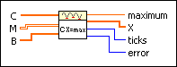
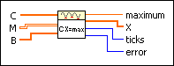

Linear Programming Simplex Method VI
Owning Palette: Optimization VIs
Requires: Full Development System
Determines the solution of a linear programming problem.

 Add to the block diagram Add to the block diagram |
 Find on the palette Find on the palette |
Owning Palette: Optimization VIs
Requires: Full Development System
Determines the solution of a linear programming problem.

| Add to the block diagram |
Find on the palette |
 |
C is a vector describing the linear functional to maximize. |
 |
M is a matrix describing the different constraints. |
|
B is a vector describing the right sides of the constraints inequalities. |
 |
maximum is the maximal value, if it exists, of X under the constraints. |
 |
X is the solution vector. |
 |
ticks is the time in milliseconds for the whole calculation. |
 |
error returns any error or warning condition from the VI. The nonexistence of a solution X leads to an error. You can wire error to the Error Cluster From Error Code VI to convert the error code or warning into an error cluster. |
The following equation defines the optimization problem this VI solves.
cx = max!
with the constraints x  0 and mx b.
0 and mx b.
For the optimization problem cx = max!, use the following definitions:
X = (x1, …, xn)
C = (c1, …, cn)
B = (b1, …, bk)
M is a k-by-n matrix.
To solve the optimization problem, you must decide whether an optimal vector X does exist. If the optimal vector does exist, then determine this vector X.
The solution of a linear programming problem is a two-step process. Complete the following steps to solve a linear programming problem.
 | Note The restricted normal formulation seems to be special. But there are many ways to reformulate terms. For example, dx  e is equivalent to –dx –e and, dx = e is equivalent to the combination dx e and –dx –e. e is equivalent to –dx –e and, dx = e is equivalent to the combination dx e and –dx –e. |
Refer to the Geometrical Analysis with Linear Programming VI in the labview\examples\Mathematics\Optimization directory for an example of using the Linear Programming Simplex Method VI.
 Open example Find related examples
Open example Find related examples